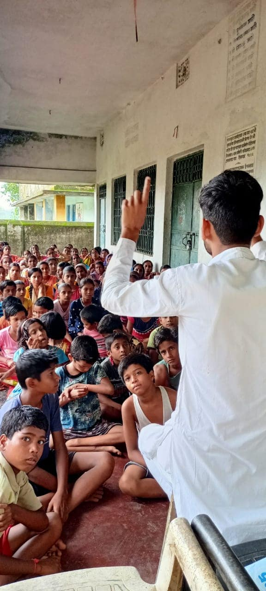
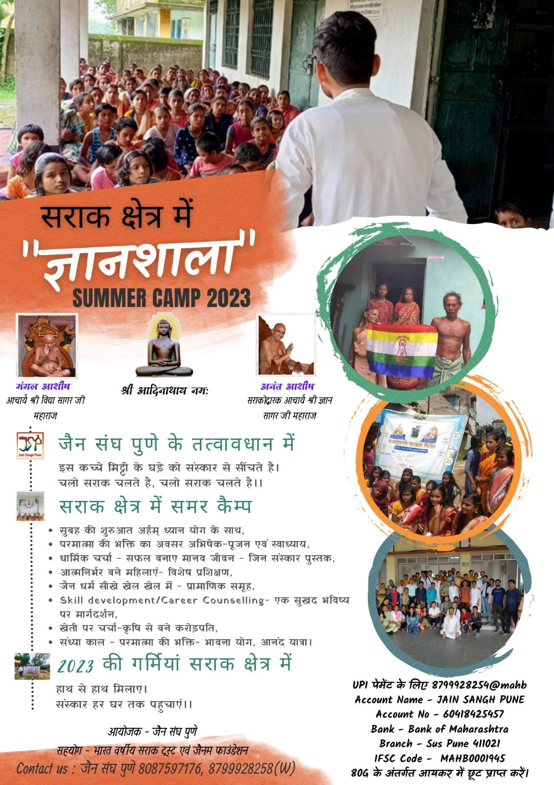
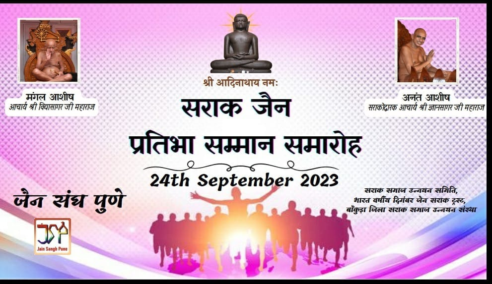
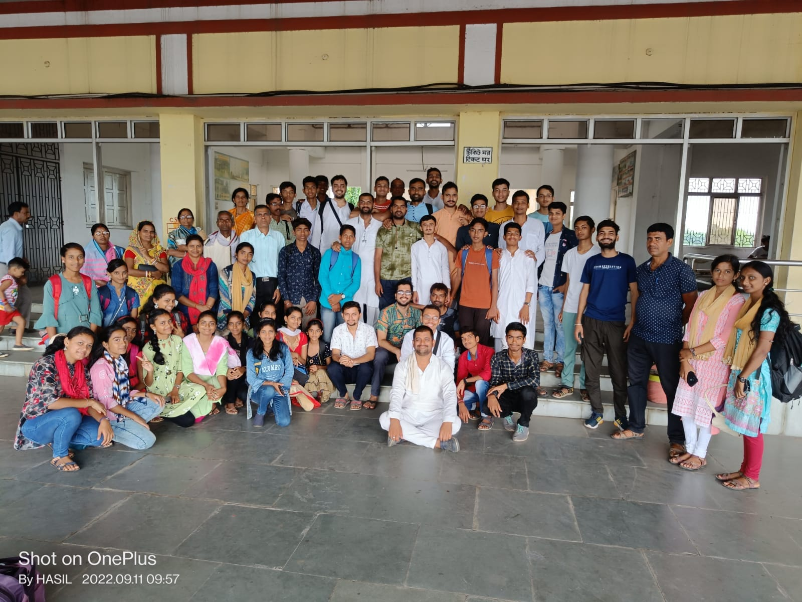
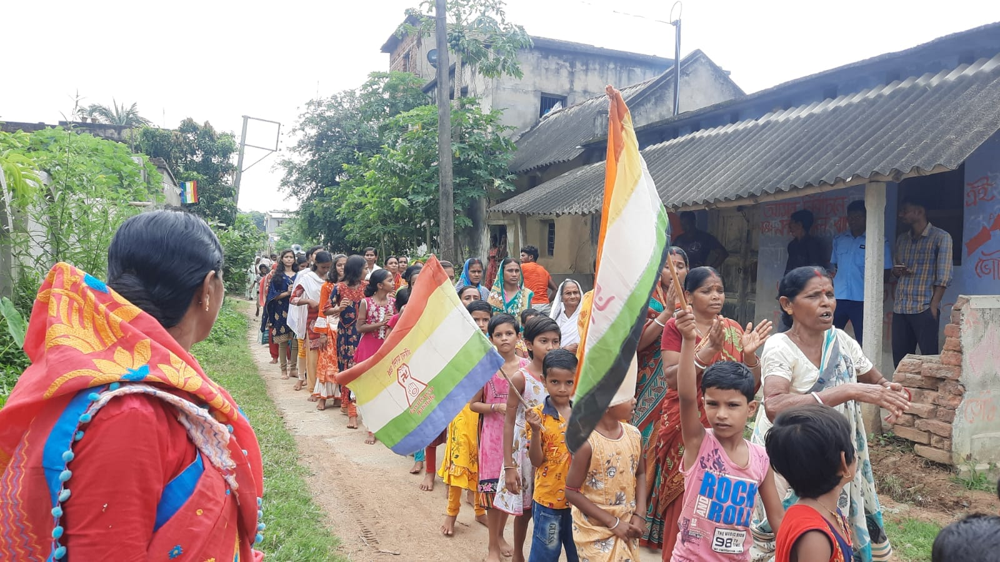
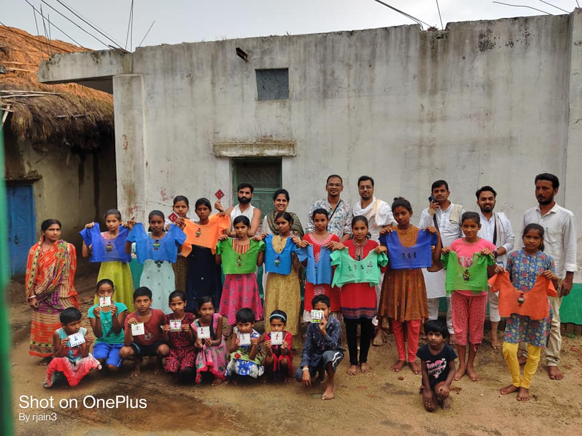
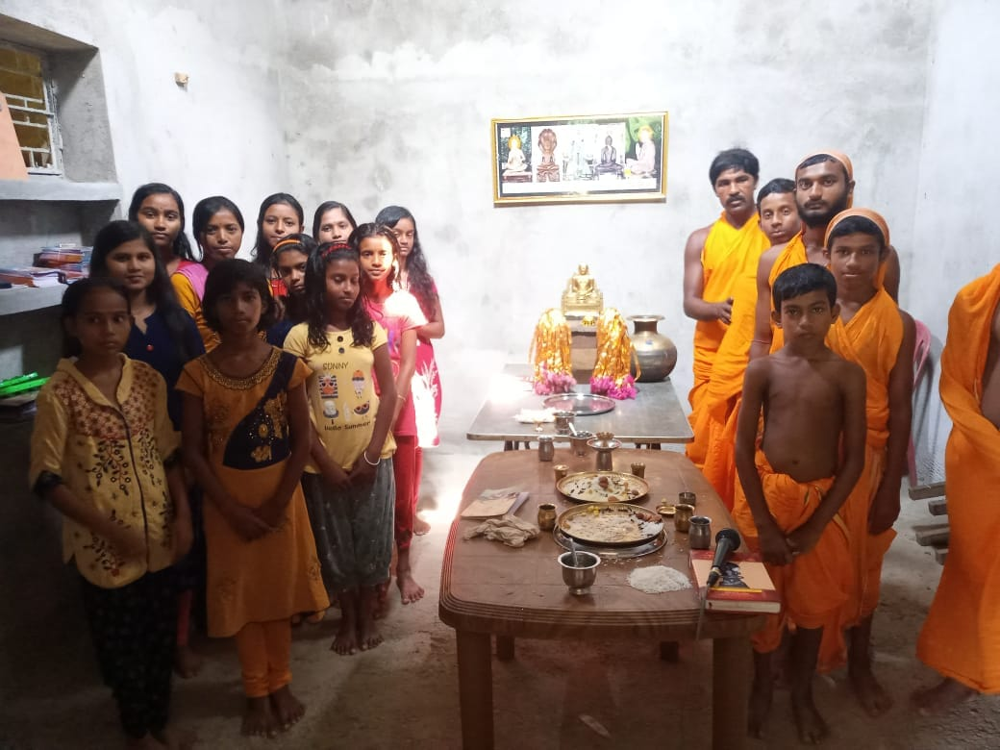

सराक उत्थान (Welfare Enhancement)
सराक 'अपभ्रंश ऑफ़ श्रावक' : The term सराक originates as a phonetic corruption (Apabhraṇśa) of the Sanskrit word Śrāvaka (meaning a Jain layman or listener). The Saraks represent an ancient Jain ethnoreligious community that has proudly retained profound Jain practices, such as strict vegetarianism, since antiquity.
The Sarak Diaspora & Culture
Ancient texts and archaeological records, including accounts from the Kalpa Sūtra, suggest that the Tirthankara Mahavira himself visited this community's native regions (historically known as Vajjabhumi). Legends and scholarship even note that the renowned Jain scholar Bhadrabahu may have belonged to the Sarak lineage.
Geographic Distribution
The total global population is estimated between 34,000 to 50,000 individuals, concentrated across eastern regions:
- West Bengal: 25,000–35,000 (Purulia, Bankura, and Bardhaman districts)
- Jharkhand: 5,000–10,000 (Ranchi, Dumka, Giridih, and Singhbhum regions)
- Odisha: 2,000–5,000
- Other areas: Bihar, Assam, and parts of Bangladesh
Linguistic Diversity
Despite their shared ancestry, geographical diffusion has led the Saraks to adopt local regional tongues while maintaining their spiritual identity. Today, Sarak families speak:
- Bengali (primarily in Bengal & Jharkhand)
- Singhbhumi Odia
- Hindi, Assamese, and Bihari languages
Contribution of Jain Sangh Pune in सराक उत्थान
जैन धर्म प्रभावना
For several years, Jain Sangh Pune, supported by over 50 dedicated Dharm Sarthi volunteers, has been regularly organizing Shravak Sanskar camps in the remote Sarak regions.
The core focus of these camps includes:
- ✨ Religious & Cultural Roots: Introducing and strengthening Jain values and traditions among Sarak Jains.
- ✨ Education & Empowerment: Guiding the youth toward higher education and sustainable employment opportunities.
- ✨ Holistic Development: Sowing the seeds of moral virtues and ethical values for a meaningful human life.





प्रतिभा सम्मान 2023
In 2023, Jain Sangh Pune organized the prestigious 'प्रतिभा सम्मान' event to honor and celebrate the remarkable achievements of individuals from the Sarak community. This event not only recognized outstanding contributions in various fields but also served as a platform to inspire and motivate future generations of Saraks to continue striving for excellence while upholding their rich cultural heritage.



घर्म प्रभावना एवं जागरूकता जुलूस



तीर्थ दर्शन एवं संरक्षण

